Introducao ao Sistema
Este manual abrange todas as funcionalidades principais do sistema ERP, incluindo modulos fiscais, configuracoes de equipamentos e operacoes especiais.
Modulos Principais
- Gestao Fiscal (NFe/NFCe)
- Controle de Estoque
- Relatorios Gerenciais
- Configuracoes de Equipamentos
Funcionalidades Avancadas
- Etiquetas Personalizadas
- Integracao com Balancas
- Operacoes de Devolucao
- Referenciamento de Documentos
Etiquetas Personalizadas
Crie etiquetas personalizadas para produtos com informacoes especificas da sua empresa.
Como Criar uma Etiqueta Personalizada:
- Acesse o menu "Configuracoes > Etiquetas"
- Clique em "Nova Etiqueta"
- Defina as dimensoes da etiqueta (largura x altura)
- Adicione os campos desejados:
- Codigo do produto
- Descricao
- Preco
- Codigo de barras
- Logo da empresa
- Configure a fonte e tamanho dos textos
- Posicione os elementos na etiqueta
- Salve a etiqueta com um nome descritivo
- Teste a impressao com um produto
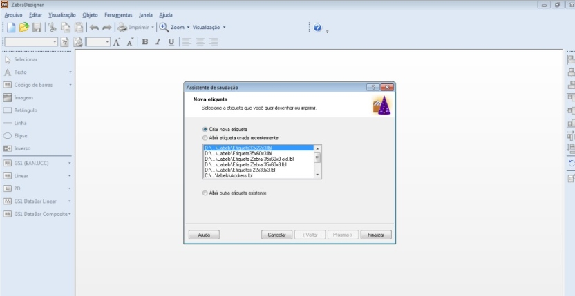
Figura 1: Criando uma nova etiqueta personalizada
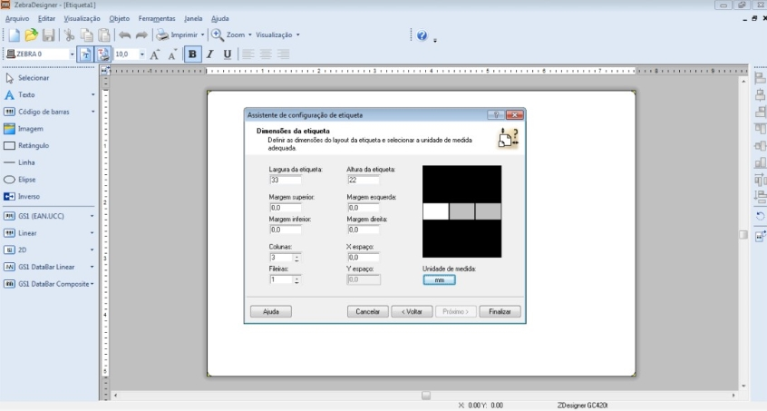
Figura 2: Configurando as medidas da etiqueta
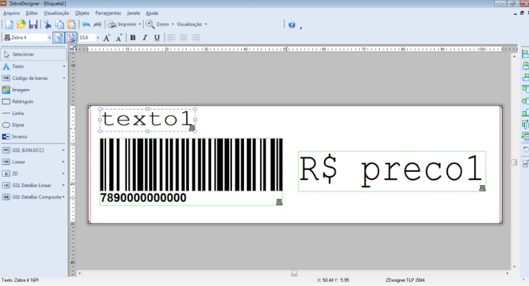
Figura 3: Adicionando objetos e campos na etiqueta
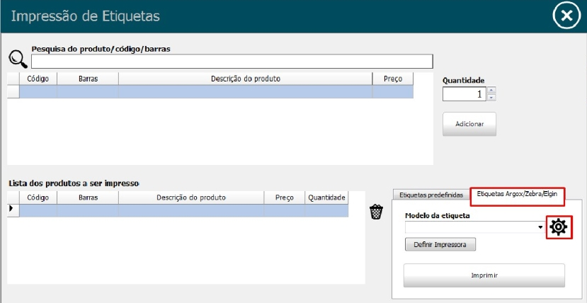
Figura 4: Configuracao detalhada da etiqueta
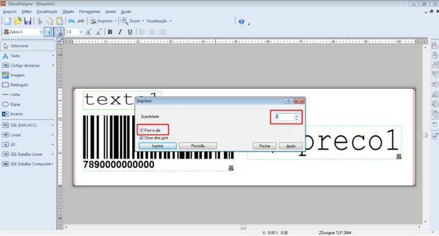
Figura 5: Salvando a etiqueta personalizada
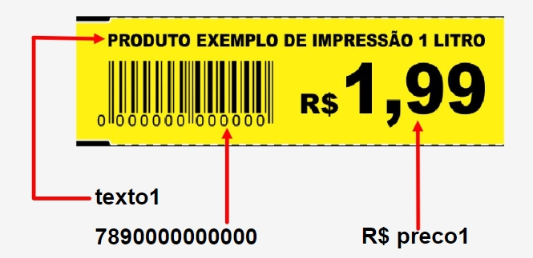
Figura 6: Exemplo de etiqueta configurada para gondola
Dica: Use codigos de barras EAN-13 ou Code 128 para melhor compatibilidade com leitores de codigo de barras.
Configuracao de Balanca
Configure balancas de checkout e balancas de peso para integracao automatica com o sistema.
Configurar Balanca de Checkout:
- Acesse "Configuracoes > Equipamentos > Balanca"
- Selecione o tipo de balanca (Toledo, Filizola, etc.)
- Configure a porta de comunicacao (COM1, COM2, etc.)
- Defina a velocidade de comunicacao (baud rate)
- Configure o protocolo de comunicacao
- Teste a conexao com a balanca
- Salve as configuracoes
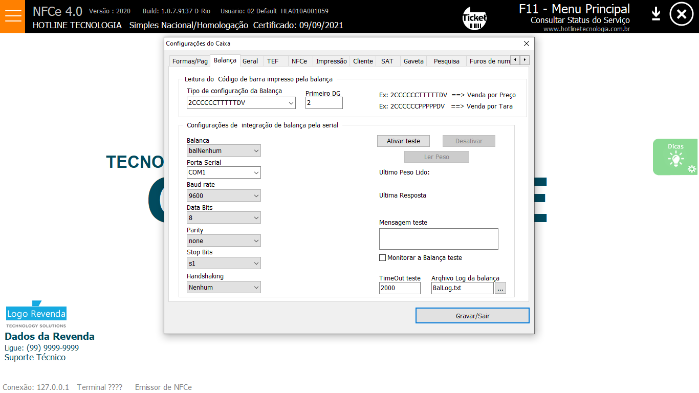
Figura 7: Configuracao de balanca de checkout
Gerando Arquivo para Balanca:
- Acesse "Relatorios > Balanca"
- Selecione os produtos que serao enviados
- Escolha o formato do arquivo (TXT, CSV)
- Configure o mapeamento dos campos
- Gere o arquivo
- Transfira o arquivo para a balanca via cabo ou pendrive
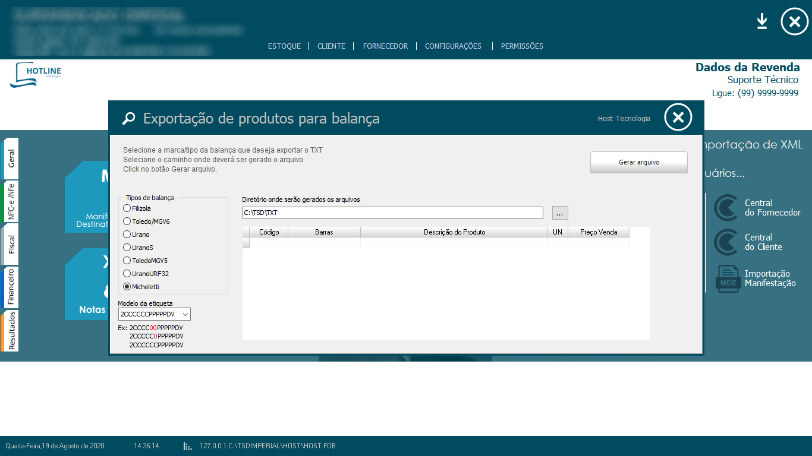
Figura 8: Gerando arquivo para transferencia na balanca
Atencao: Certifique-se de que a balanca esteja desligada antes de conectar ou desconectar cabos de comunicacao.
Modulo Financeiro
Gestao completa de contas a pagar e receber com controles avancados.
Contas a Receber:
- Acesse "Financeiro > Contas a Receber"
- Visualize todas as contas pendentes
- Use filtros para organizar por cliente, data ou valor
- Realize baixas de contas conforme recebimentos
- Configure juros e multas automaticas
- Gere relatorios de inadimplencia
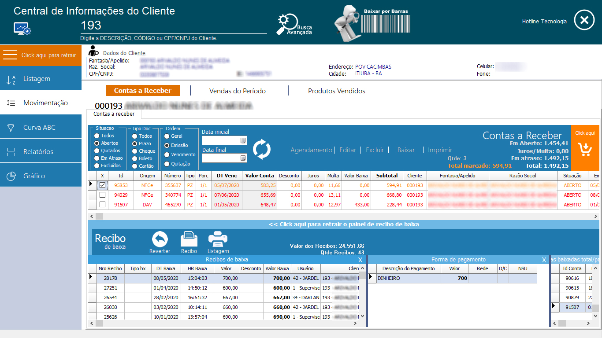
Figura 9: Interface de contas a receber
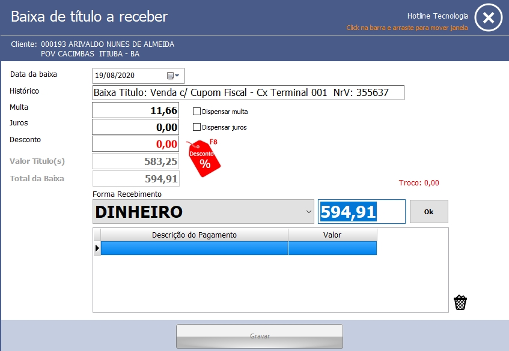
Figura 10: Processo de baixa de conta
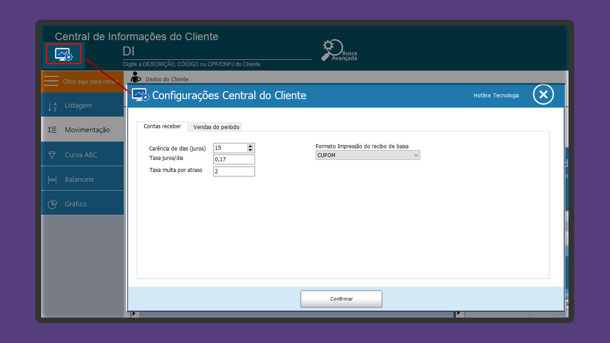
Figura 11: Configuracao de juros e multas
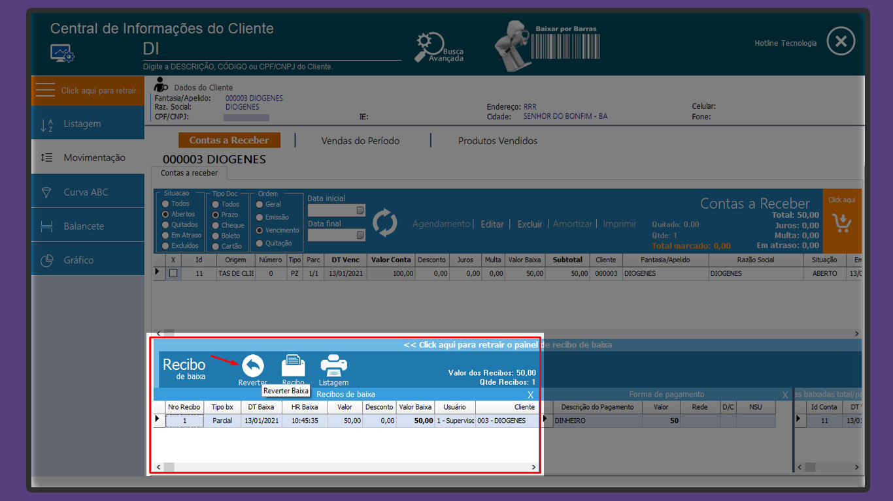
Figura 12: Revertendo operacao de conta a receber
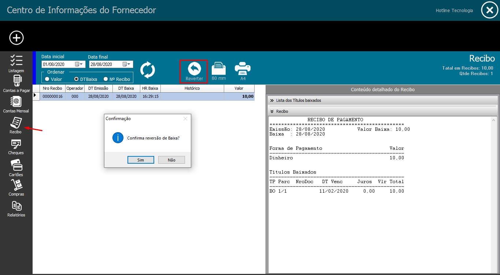
Figura 13: Revertendo operacao de conta a pagar
Dica: Configure alertas automaticos para contas vencidas e mantenha um controle rigoroso dos recebimentos.
Relatorios
Relatorios gerenciais e fiscais para controle e analise dos dados.
Relatorios Fiscais
- Relatorio de NF-e emitidas
- Relatorio de NFC-e emitidas
- Relatorio de devolucoes
- Relatorio de cancelamentos
- Relatorio de inutilizacoes
Relatorios Gerenciais
- Relatorio de vendas
- Relatorio de produtos
- Relatorio de clientes
- Relatorio de estoque
- Relatorio financeiro
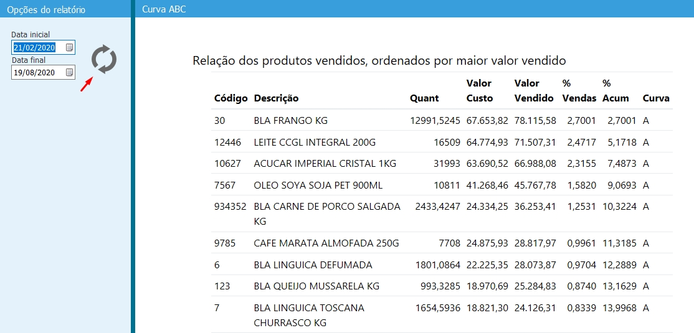
Figura 14: Relatorio de analise ABC
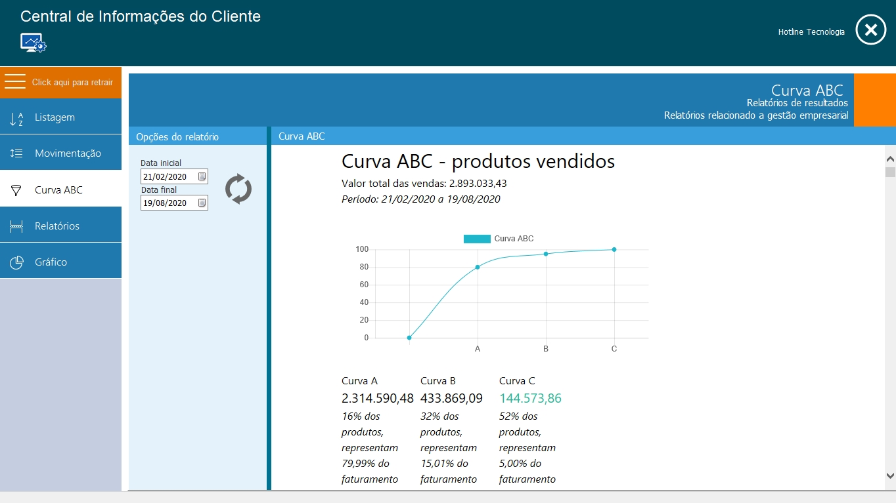
Figura 15: Curva ABC de produtos
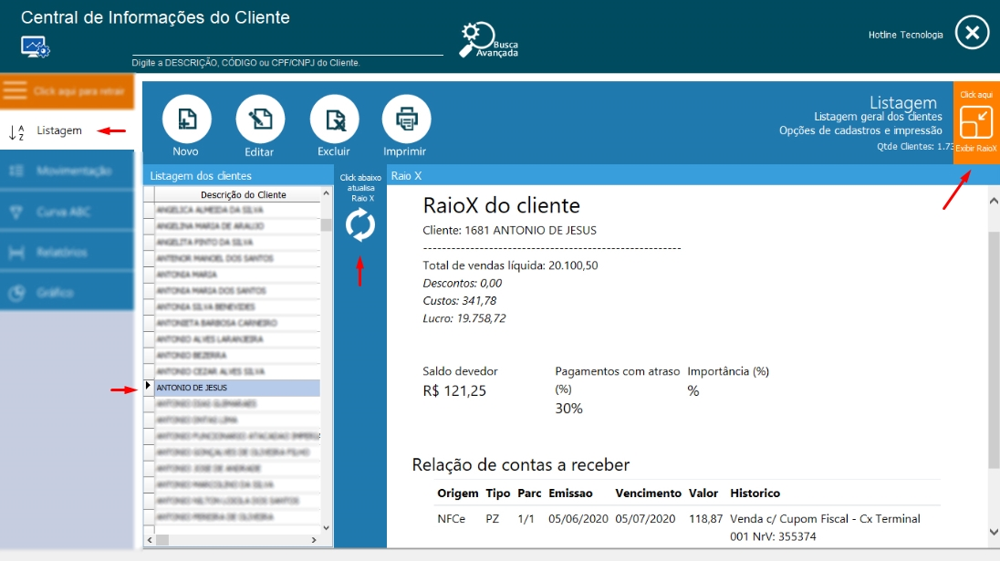
Figura 16: Relatorio de raio de vendas
Como Gerar Relatorios:
- Acesse "Relatorios" no menu principal
- Selecione o tipo de relatorio desejado
- Configure os filtros:
- Periodo (data inicial e final)
- Cliente (se aplicavel)
- Produto (se aplicavel)
- Status (se aplicavel)
- Clique em "Gerar Relatorio"
- Visualize o relatorio na tela
- Imprima ou exporte (PDF, Excel)
Backup e Seguranca
Mantenha seus dados seguros com backups regulares e configuracoes de seguranca.
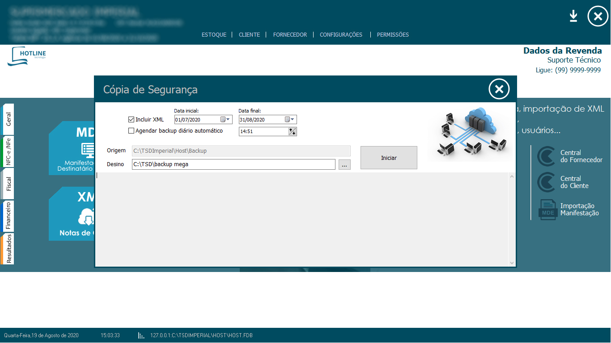
Figura 17: Configuracao de backup automatico
Configurar Backup Automatico:
- Acesse "Configuracoes > Backup"
- Defina a frequencia do backup (diario, semanal)
- Escolha o local de destino do backup
- Configure a retencao dos arquivos
- Ative o backup automatico
- Teste o processo de backup
- Configure notificacoes de backup
Importante: Sempre mantenha backup dos dados e certifique-se de que o certificado digital esta valido antes de emitir documentos fiscais.
Dicas e Truques
Dicas praticas para aproveitar ao maximo o sistema.
Dicas de Produtividade:
- Use atalhos de teclado para navegar mais rapidamente
- Configure favoritos para acessar funcoes frequentemente usadas
- Use a busca rapida para encontrar produtos e clientes
- Configure alertas de estoque baixo
- Faca backup regular dos dados
- Mantenha o sistema atualizado
- Use relatorios para tomar decisoes baseadas em dados
- Configure notificacoes por e-mail
Solucao de Problemas Comuns:
| Problema | Causa | Solucao |
|---|---|---|
| NFe rejeitada | Dados incorretos | Verificar dados do destinatario |
| Erro de certificado | Certificado vencido | Renovar certificado digital |
| Sistema lento | Muitos dados | Fazer limpeza de dados antigos |
| Impressao nao funciona | Impressora offline | Verificar conexao da impressora |
| Erro de conexao | Internet instavel | Verificar conexao com internet |